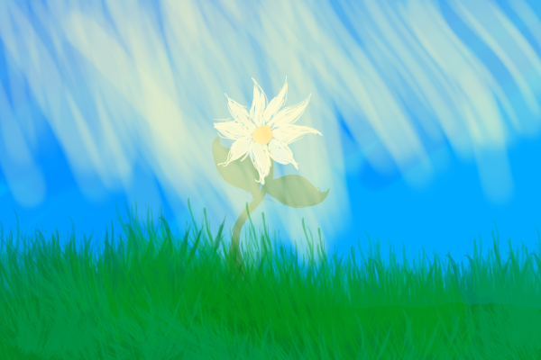

Deep underground, moistened by the rain, a seed opens its hard shell. Hesitantly, unsure what it will find in the world beyond its tiny refuge, a sprout emerges. Nourished by the warm soil, it journeys forth, pressing upwards out of an instinct it is unaware of the reason for. For days, it makes progress unimpeded – until it hits an obstacle more adamant than it is prepared to meet. It presses with all its might, but its efforts seem to be in vain. For a moment, the sprout becomes discouraged. But, feeling the warmth in the soil, it senses it is getting closer to the source. Then, the sprout remembers: it has something to do. It twists, turns, seeks a way around the hard stony wall in its path. It squeezes to the surface, and in the open air for the first time, the sprout spreads a pair of tiny leaves to greet the sun.
